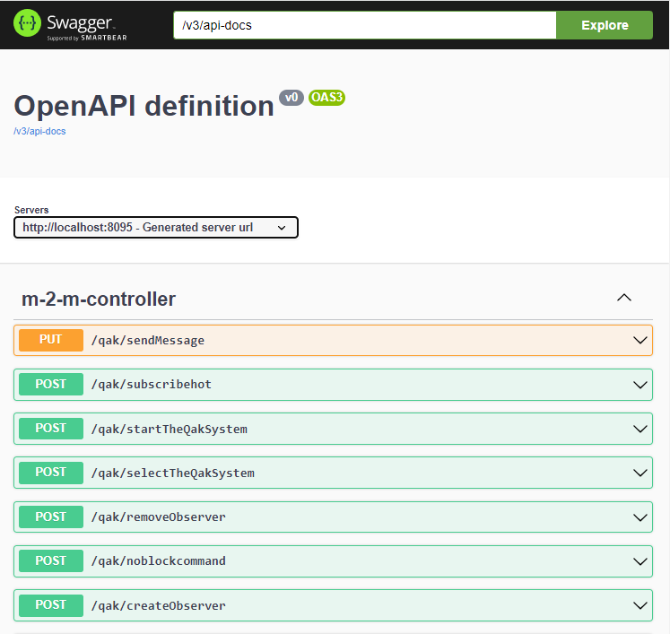

QakFacade¶
Obiettivo: costruire una facade REST per un sistema Qak.
Un sistema Qak costituisce una applicazione distribuita basata su componenti detti attori attivabili su uno o più nodi computazionali, che interagisocno a scambio di messaggi (sono privi di memoria comune) supportati da una apposita infrastruttura a run time.
La parte di codice necessaria all’uso del Qak-runtime viene generata in modo automatico a partire da un modello che descrive ad alto livello gli aspetti della architettura applicativa, in temini di struttura, interazione e comportamento logico degli attori.
La generazione automatica di codice permette agli application designer di concentrare l’attenzione sulla logica applicativa, senza doversi occupare dei dettagli legati alla realizzazione delle comunicazioni via rete.
Un sistema Qak possiede molte caratteristiche tipiche dei microservizi, focalizzando l’attenzione sull’autonomia dei componenti (gli attori) e sulla interazione a scambio di messaggi, partendo dalle otto assunzioni di Peter Deutsh:
La rete è affidabile
La latenza è nulla
L’ampiezza di banda è infinita
La rete è sicura
La topologia non cambia
Esiste un amministratore del sistema
Il costo del trasporto è nullo
La rete è omogenea
Lo scopo è quello di abituarsi all’uso di un nuovo modello computazionale, anche nel caso in cui il sistema sia allocato su unica JVM, caso in cui molte delle assunzioni precedenti possono essere considerate vere.
Aspetti critici che sorgono quando qualcuna delle assunzioni precedenti viene meno e necessita quali scalabilità, resilienza, etc. sono ricondotte all’uso di infrastrutture più evolute e meglio supportate, come SpringBoot.
Qui, il nostro intento è utilizzare SprinBoot per costruire una Facade di acesso al sistems Qak, utilizzabile da utenti umani e da programmi.
QakFacade: cosa fa¶
Le funzionalità della Facade sono:
attivare utilizzando applicazione Qak
fornire la lista dei nomi degli attori che compaiono nell’applicazione Qak
fornire la lista dei messaggi che gli attori gestiscono nelle diverse transizioni di stato
creare/eliminare observer sugli attori (in relazione alle informazioni emesse via Coap)
inviare messaggi ad attori
Per un esempio di uso si veda QakFacade: esempio di uso.
QakFacadeApi¶
Le funzionalità che costituiscono la core application sono definite dalla interfaccia QakFacadeApi:
public interface QakFacadeApi { public String startTheQakSystem(String sysDescr); public List<String> getActorNames(); public String getActor(String name); public String getActorsApi(); public String sendMessage(String msg); public String manageObserver( String observed, boolean create ); }
Tutti i metodi firniscono informazione in uscita che potrà essere visualizzata in una area di output della QakFacade: GUI.
QakSystemFacade¶
Le funzionalità che costituiscono la core application della Facade e sono realizzate dal POJO QakSystemFacade che implementa la interfaccia QakFacadeApi. Ad esempio:
import it.unibo.kactor.sysUtil; //In unibo.qakactor23-3.5 import it.unibo.kactor.MsgUtil; //In unibo.qakactor23-3.5 public class QakSystemFacade implements QakFacadeApi { private static final String warning = "WARNING: System not started"; ... @Override public List<String> getActorNames() { if( blctxName == null ) return createEmptyAnswer(); List<String> actors = sysUtil.getAllActorNames(); return actors; } @Override public String sendMessage(String msg) { if( blctxName == null ) return warning ; IApplMessage m = new ApplMessage(msg); if( m.isEvent() ){ ActorBasic emitter = sysUtil.getActor(m.msgSender()); if( emitter == null ) return "WARNING: event emitter unknown"; MsgUtil.emitEvent( m, null ); return "emitted:$msg"; } String dest = m.msgReceiver(); String answer = sendMsgToActor(m,dest); return answer; } }
QakSystemFacade - Invio di messaggi¶
Se l’attore destinatario è locale, inserisce il messaggio nella sua coda. Altrimenti, invia il messaggio sulla connsesione TCP al contesto dell’attore.
public String sendMsgToActor(IApplMessage m, String actorName){
ActorBasic a = sysUtil.getActor(actorName);
if( a != null ){
a.sendMsgToMyself(m);
return "sent" + m;
}else{ //Actor non local => using TCP
QakContext recCtx = sysUtil.getActorContext(m.msgReceiver());
String receiverCtx=recCtx.getName();
int receiverPort = recCtx.getPortNum();
String receiverHost = recCtx.getHostAddr();
String answer = sendMessageUsingTcp(m,receiverHost,receiverPort);
return answer;
}
}
public String sendMessageUsingTcp(IApplMessage m, String addr, int port ) {
try {
Interaction2021 conn = new TcpConnection(addr, port);
conn.request(m.toString());
if( m.isRequest() ) {
String answer = conn.request(m.toString()); //sincrono
return answer;
}else{
conn.forward(m.toString());
return "sendMessageUsingTcp done";
}
}catch(Exception e){...}
}
QakFacade: GUI¶
L’accesso per gli utenti umani è realizzato da QakFacade HIController che fornisce una pagina web che ha sezioni di input (per l’invio di comandi) e di output.
{kind=link}
Le sezioni di output includono aree:
per la visualizzazione delle risposte ai comandi (ad esempio aree WELCOME, Transitions). Per il loro aggiornamento si veda HIController updateViewmodel;
per la visualizzazione delle informazioni dinamicamente emesse dagli observer attivati sugli attori (area Actor update area). Per il loro aggiornamento si veda Lo script wsminimal.js.
I pulsanti presenti nelle sezioni di input della pagina inviano richieste:
HTTP-GET ( getActorNames, getActorsApi, getActor )
HTTP-POST ( START, sendMessage )
Si ricorda che lo standard HTML prevede che le form utilizzino il metodo POST. L’uso del metodo PUT viene trasformato in GET.
qakSystemGui.html¶
La pagina qakSystemGui.html organizza il suo layout utilizzando bootstrap. Essa include sezioni aggiornabili mediante l’uso dei meccanismi di Theamleaf. Ad esempio:
<h4>Notification area</h4>
<div id="INFO" th:text="${info}" style="color:#2d862d;font-size:22px;">
todo
</div>
La pagina include anche form relative alle sezioni di input. Ad esempio:
<form action="sendMessage" method="post">
<input type="text" size=40 id="sendMessagespec" name="name" fon
value="msg(cmd,dispatch,gui,basicrobot,cmd( r ),1)">
<!-- value="msg(MSGID,MSGTYPE,SENDER,DEST,CONTENT,N)"> -->
<input type="submit" value="cmd">
</form>
websockets¶
La pagina include anche Lo script wsminimal.js per gestire dinamicamente informazioni via websoket.
QakFacade: esempio di uso¶
Attivare
unibo.QakRestFacade.QakRestApplication.Selezionare l’applicazione Qak (pulsante
SELECT).Selezionare ed attivare un contesto (pulsante
START). L’elenco degli attori disponibili viene mostrato nell’areaLocals.Selezionare un attore da osservare e premere il pulsante
CREATEper creare un observer CoapImpostare un messaggio (dispatch, request o event) a uno degli attori e premere il pulsante
sendMessage. Osservare le informazioni emeese inActor update area.Attivare un programma (Java, Python, etc.) che invia un messaggio a un attore via TCP e osservare la modifica nell’area Observing. Ad esempio:
public class CallerQakSystem { final protected String HOST = "localhost"; final protected int port = 8160; private Interaction2021 conn; public void connect() throws Exception { conn = TcpClientSupport.connect(HOST, port ,10 ); } public void sendMessageToBasicrobot() throws Exception { //invio all'attore senza passare per la REST Facade String msgTurnRight="msg(cmd,dispatch,callertcp,basicrobot,cmd(r),1)"; String msgTurnLeft ="msg(cmd,dispatch,callertcp,basicrobot,cmd(l),1)"; conn.forward( msgTurnRight ); conn.forward( msgTurnLeft ); } public static void main(String[] args) throws Exception { CallerQakSystem appl = new CallerQakSystem(); appl.connect(); appl.sendMessageToBasicrobot(); } }
QakFacade HIController¶
HIController è un Controller Spring :
@Controller public class HIController implements QakHIService { private QakSystemFacade qakSys = new QakSystemFacade(); ...
Questo controller implementa L’interfaccia QakHIService utilizzando QakSystemFacade.
L’interfaccia QakHIService¶
Questa interfaccia definisce
public interface QakHIService { @GetMapping(value="/") String entry( Model viewmodel ); @PostMapping(value="/selectTheQakSystem") String selectTheQakSystem(Model viewmodel, @RequestParam(name="sys", required=true) String sys); @PostMapping(value="/changeIp") String changeip(Model viewmodel, @RequestParam(name="ctxip", required=true) String ctxip); @PostMapping(value="/startTheQakSystem") String startTheQakSystem(Model viewmodel, @RequestParam(name="sysDescr", required=true) String sysDescr); @GetMapping(value="/getActorNames") String getActorNames( Model viewmodel ); //output in the page @GetMapping(value="/getActorsApi") String getActorsApi( Model viewmodel ); @GetMapping(value="/getActor") String getActor(Model viewmodel, @RequestParam String name); @PostMapping(value="/sendMessage") //Put ??? String sendMessage(Model viewmodel, @RequestParam(name="name", required=true) String msg ); @PostMapping(value="/createObserver") public String createObserver(Model viewmodel, @RequestParam(name="observed", required=true) String observed); @PostMapping(value="/removeObserver") public String removeObserver(Model viewmodel, @RequestParam(name="observed", required=true) String observed); }
HIController - realizzazione¶
HIController realizza i comandi inviando opportuni metodi dell’istanza qaSys di QakSystemFacade, restituendo sempre una pagina HTML (qakSystemGui.html) con opportuni aggiornamenti del viemodel.
@Controller public class HIController implements QakHIService { ... @Override public String getActorNames(Model viewmodel) { if( ! isStarted(viewmodel) ) return "qakSystemGui"; List<String> actorNames = qakSys.getActorNames(); updateViewmodel(viewmodel, "ActorNames:"+ actorNames.toString(), qakSys.getCtxname()); return "qakSystemGui"; } private boolean isStarted(Model viewmodel){ if( qakSys.getCtxname().equals("unknown") ) { updateViewmodel(viewmodel, warning, "Application not started"); return false; } else return true; }
HIController updateViewmodel¶
Il metodo updateViewmodel rappresenta lo standard per la enmissioni di informazioni relativa ai comandi:
private void updateViewmodel(Model model,String info ){
model.addAttribute("info", info );
}
Ad esempio:
@Override
public String sendMessage(Model viewmodel, String msg) {
if( ! isStarted(viewmodel) ) return "qakSystemGui";
String answer = qakSys.sendMessage(msg);
updateViewmodel(viewmodel, answer, qakSys.getCtxname());
return "qakSystemGui";
}
Altre informazioni possono essere emesse ad hoc nelle sezioni di output della pagina
da parte di specifici comandi. Ad esempio, l’endpoint getActorsApi aggiorna
il campo Transitions:
@Override
public String getActorsApi(Model viewmodel) {
if( ! isStarted(viewmodel) ) return "qakSystemGui";
Iterator<String> answer = qakSys.getActorsTransitions() ;
updateViewmodel(viewmodel,
"trans", qakSys.getCtxname() + " port=" + qakSys.getPort());
viewmodel.addAttribute("transitions", answer );
return "qakSystemGui";
}
QakFacade M2MController¶
La facade offre anche accesso per programmi, realizzato da un RestController (M2MController) che fornisce accessi sincroni e accessi asincroni implementando due diversi insiemi di API:
public class M2MController implements QakM2MServiceSynch, QakM2MServiceAsynch {
...
}
Interfaccia QakM2MServiceSynch¶
L’interfaccia QakM2MServiceSynch definisce gli endpoints sincroni che costituiscono un secondo modo di accesso alle funzionalità di QakSystemFacade.
public interface QakM2MServiceSynch { @GetMapping(value="/qak/getActorNames", produces ="application/json") List<String> getActorNames( ); @GetMapping(value="/qak/getActorsApi", produces ="application/json") String getActorsApi( ); @GetMapping(value="/qak/getActor", produces ="application/json") public String getActor(@RequestParam String name); @PostMapping(value="/qak/startTheQakSystem", produces ="application/json") String startTheQakSystem(@RequestBody String sysDescr ); @PostMapping(value="/qak/sendMessage", produces ="application/json") void sendMessage(@RequestBody String msg ); }
M2MController - realizzazione parte sincrona¶
public class M2MController implements QakM2MServiceSynch, QakM2MServiceAsynch{
//Selezione della applicazione qak
@Override
public String selectTheQakSystem ( String qaksysdesrc ) {
QakSystemFacade.qakSystemDescrFilename = qaksysdesrc;
String ctxNames = qakSys
.getCtxNamesFromDescription(
QakSystemFacade.qakSystemDescrFilename).toString().trim()
.replace("[","").replace("]","");
qakSys.setExternalActorCtxs();
Iterator<String> externals = qakSys.qakExternals.iterator() ;
return "selectTheQakSystem done " + ctxNames;
}
//Attivazione della applicazione qak
@Override
public String startTheQakSystem( String ctx ) {
if( qakSys.getCtxname().equals(ctx) ) {
String msg = "Already started for ctx=" + ctx;
return msg;
}
String answer = qakSys.startTheQakSystem( ctx);
return answer;
}
@Override //PUT
public String sendMessage(String msg) {
if( ! isStarted( ) ) return warning;
return qakSys.sendMessage(msg);
}
//Creazione di un observer
@Override //POST
public String createObserver(@RequestBody String name ){
if( ! isStarted( ) ) return warning;
return qakSys.manageObserver(name, true);
}
//Rimozione di un observer
@Override
public String removeObserver(@RequestBody String name ){
if( ! isStarted( ) ) return warning;
return qakSys.manageObserver(name, false);
}
//Accesso a informazioni
@Override
public List<String> getActorNames() {
if( ! isStarted( ) ) return createEmptyAnswer();
return qakSys.getActorNames(qakSys.blctxName);
}
...
Uso di OpenApi (ex Swagger)¶
Aggiungiamo una dipendenza in build.gradle:
implementation 'org.springdoc:springdoc-openapi-ui:1.6.11'
Aggiungiamo in application.properties:
spring.mvc.pathmatch.matching-strategy = ANT_PATH_MATCHER
Invochiamo
http://localhost:8095/swagger-ui/index.html
|
 |
Apriamo selectTheQakSystem |

|
Try it out: selectTheQakSystem

|
Suggerimenti in uscita curl -X 'POST' \
'http://localhost:8095/qak/selectTheQakSystem' \
-H 'accept: application/json' \
-H 'Content-Type: application/json' \
-d 'basicrobot23.pl'
Request URL:
http://localhost:8095/qak/selectTheQakSystem
|
Esempi di uso con curl¶
//Selezione della applicazione qak
curl -d "basicrobot23.pl" -H "Content-Type: application/json"
-X POST http://localhost:8095/qak/selectTheQakSystem
//Attivazione della applicazione qak
curl -d "ctxbasicrobot" -H "Content-Type: application/json"
-X POST http://localhost:8095/qak/startTheQakSystem
//Accesso a informazioni
curl http://localhost:8095/qak/getActorNames
curl http://localhost:8095/qak/getActor?name="basicrobot"
//Invio di messaggio
curl -d "msg(cmd,dispatch,gui,basicrobot,cmd(l),1)" -H "Content-Type: application/json"
-X PUT http://localhost:8095/qak/sendMessage
//Creazione di un observer
curl -d "basicrobot" -H "Content-Type: application/json"
-X POST http://localhost:8095/qak/createObserver
//Eliminazione di un observer
curl -d "basicrobot" -H "Content-Type: application/json"
-X POST http://localhost:8095/qak/removeObserver
L’invio di un messaggio dopo avere creato un observer, provoca un aggiornamento della Actor update area sulla QakFacade: GUI da parte di QakSystemFacade.
Uso di HAL¶
Aggiungiamo una dipendenza in build.gradle:
implementation 'org.springframework.data:spring-data-rest-hal-explorer'
QakFacade Interazioni asincrone¶
Problematica: le interazioni basate su RESTful JSON APi via HTTP sono sincrone. Quindi un programma chiamante rimane bloccato in attesa della risposta.
Analisi: l’uso di chiamate bloccanti può causare inconvenienti cha vanno da possibili lunghi tempi di risposta (che tengono impegnato il chiamante) a possibili crash del server. Occorre consentire meccanismi di chiamata non-bloccante.
Soluzioni:
non-blocking synchronous API: usare un framework reattivo basato su non-blocking I/O, in cui l’attesa della risposta non implica l’allocazione di un thread.
massage-based systems: adottare un modello di programmazione asincrono, basato su invio di messaggi.
WebClient¶
WebClient è un’interfaccia che rappresenta il punto di ingresso principale per l’esecuzione di richieste web.
È stato creato come parte del modulo Spring Web Reactive per sostituire RestTemplate in questi scenari. Il nuovo client è una soluzione reattiva e non bloccante che funziona tramite il protocollo HTTP/1.1. L’interfaccia ha come unica implementazione la classe DefaultWebClient.
Il client offre supporto anche per operazioni sincrone bloccando l’operazione per ottenere il risultato. Naturalmente, questa pratica non è consigliata se stiamo lavorando su uno stack reattivo.
Dipendenze: ‘org.springframework.boot:spring-boot-starter-webflux’
Interfaccia QakM2MServiceAsynch¶
L’interfaccia QakM2MServiceAsynch definisce gli endpoints asincroni:
public interface QakM2MServiceAsynch { @GetMapping(value="/qak/getmono", produces ="application/json") ResponseEntity<Mono<String>> getmono( ); @GetMapping(value="/qak/getfluxcold", produces ="application/json") public Flux< Integer > getfluxcold( ); @GetMapping(value="/qak/startfluxhot", produces ="application/json") public Flux<String> startfluxhot(); @PostMapping( value="/qak/subscribehot", produces ="application/json" ) public Flux<String> subscribehot( @RequestBody String cmd ); @PostMapping(value="/qak/noblockcommand", produces ="application/json") public Flux<String> noblockcommand( @RequestBody String cmd ); }
Stream vs Flux¶
Stream is single use, vs. you can subscribe multiple times to Flux
Stream is pull based (consuming one element calls for the next one) vs. Flux has an hybrid push/pull model where the publisher can push elements but still has to respect backpressure signaled by the consumer
Stream are synchronous sequences vs. Flux can represent asynchronous sequences
M2MController - realizzazione parte asincrona¶
Dettagli di costruzione¶

QakFacade - start¶
Usiamo https://start.spring.io/

Costruisco una Spring REST app che crea l’applicazione e fornisce anche un HIControl
QakFacade - build.gradle¶
repositories {
mavenCentral()
flatDir {
dirs 'C:/Didattica2021/privato/userxyz-/QakRest/unibolibs'
}
}
dependencies {
...
//CUSTOM
implementation name: 'uniboInterfaces'
implementation name: '2p301'
implementation name: 'unibo.qakactor22-3.2'
}
QakFacade - application.properties¶
server.port = 8085
spring.mvc.pathmatch.matching-strategy = ANT_PATH_MATCHER
management.endpoints.web.exposure.include=*
QakFacade - project¶
1) interface QakApi
2) QakSystem implements QakApi (busimess logic of the Facade)
3) interface QakService e QakHIService
4) M2MController implements QakService
5) HIController implements QakHIService
QakFacade - usage¶
http://localhost:8085/swagger-ui/index.html
logging.level.io.netty.DEBUG=OFF
log4j.rootLogger=DEBUG, OFF log4j.properties
Logback.xml¶
Si veda: https://www.baeldung.com/logback.
SLF4J fornisce un’API standardizzata che in un modo o nell’altro è implementata dalla maggior parte di questi framework. Ciò consente di modificare il framework di registrazione senza modificare il codice. Hai solo bisogno di cambiare la dipendenza in un framework diverso che implementa le interfacce SLF4J.
Apache Log4j è un framework di logging molto vecchio ed è stato il più popolare per diversi anni. Ha introdotto concetti di base, come i livelli di log gerarchici e i logger, che sono ancora utilizzati dai moderni framework di registrazione.
Il team di sviluppo ha annunciato la fine del ciclo di vita di Log4j nel 2015. Sebbene molti progetti legacy lo utilizzino ancora, si deve preferire un framework più recente, come Logback.
Logback è stato scritto dallo stesso sviluppatore che ha implementato Log4j con l’obiettivo di diventarne il successore. Segue gli stessi concetti di Log4j ma è stato riscritto per migliorare le prestazioni, supportare SLF4J in modo nativo e per implementare molti altri miglioramenti come opzioni di filtro avanzate e ricaricamento automatico delle configurazioni di registrazione.
Ogni starter, come il spring-boot-starter-web, dipende da spring-boot-starter-logging, che già richiama spring-jcl.
Quando un file nel percorso di classe ha uno dei seguenti nomi, Spring Boot lo caricherà automaticamente sulla configurazione predefinita (Spring consiglia di utilizzare la variante -spring):
logback-spring.xml
logback.xml
logback-spring.groovy
logback.groovy
</configuration>
msg(start,dispatch,gui,alarm,on,1)
msg(activate,dispatch,gui,sonarsimul,on,1)
msg(ledstate,request,gui,led,ledstate(ok),1)
msg(sonardata,event,gui,none,sonardata(10),1)
java -jar C:\Didattica2021\privato\userxyz-\QakRestAppl\build\libs\unibo.qakrestapplsonar-1.0.jar &
java -jar C:\Didattica2021\privato\userxyz-\QakRestAppl\build\libs\unibo.qakrestapplledalarm-1.0.jar
About Docker¶
gradlew distTar
docker build -t qakfacade .
docker run -it –rm –name qakRestFacade -p8195:8095 –privileged qakfacade /bin/bash
docker cp basicrobotConfig.json xxxcontainerxxx:/QakRestFacade-1.0/bin/basicrobotConfig.json (localhost)
Docker compose¶
docker-compose -f facadebasicrobot.yaml up
CONTAINER ID IMAGE ..............
xyz qakfacade .......
uvw natbodocker/virtualrobotdisi:2.0 .........
docker exec -it xyz /bin/bash
docker exec -it fefb15044905 /bin/sh
cat /etc/hosts
127.0.0.1 localhost
::1 localhost ip6-localhost ip6-loopback
fe00::0 ip6-localnet
ff00::0 ip6-mcastprefix
ff02::1 ip6-allnodes
ff02::2 ip6-allrouters
192.168.48.3 fefb15044905
docker stats
CONTAINER ID NAME CPU % MEM USAGE / LIMIT MEM % NET I/O BLOCK I/O PIDS
xyz qakrestfacade_facade1_1 0.17% 258.3MiB / 24.86GiB 1.01% 19.3kB / 75.4kB 0B / 0B 69
uvw qakrestfacade_wenv_1 0.00% 16.17MiB / 24.86GiB 0.06% 10.2kB / 5.26kB 0B / 0B 11
docker system df
TYPE TOTAL ACTIVE SIZE RECLAIMABLE
Images 32 2 4.54GB 4.252GB (93%)
Containers 2 2 34.15kB 0B (0%)km
Local Volumes 16 0 67.11MB 67.11MB (100%)
Build Cache 201 0 1.363GB 1.363GB
docker system prune -af
TYPE TOTAL ACTIVE SIZE RECLAIMABLE
Images 2 2 759MB 0B (0%)
Containers 2 2 34.17kB 0B (0%)
Local Volumes 16 0 67.11MB 67.11MB (100%)
Build Cache 0 0 0B 0B
docker cp basicrobotConfig.json xyz:/QakRestFacade-1.0/bin/basicrobotConfig.json
docker cp xyz:/QakRestFacade-1.0/bin/basicrobotConfig.json <target on host>
docker inspect --format "{{.NetworkSettings.IPAddress}}" xyz (niente)
docker inspect -f "{{.HostConfig.Links}}" xyz ([])
docker inspect -f "{{.NetworkSettings.IPAddress}}" xyz (niente)l
docker exec -ti xyz ip add | grep global
git config --system core.longpaths true
https://github.com/PacktPublishing/Hands-On-Microservices-with-Spring-Boot-and-Spring-Cloud
https://static.packt-cdn.com/downloads/9781789613476_ColorImages.pdf
From https://medium.com/@gayanper/sdkman-on-windows-661976238042 Uso Git shell
Java 17 (major version 61), Java 11 (55), Java 8 (52).
git bash (come amministratore)
ln -s /c/Program\ Files/7-Zip/7z.exe /c/Program\ Files/Git/mingw64/bin/zip.exe
export SDKMAN_DIR="/c/DidatticaTools/sdkman" && curl -s "https://get.sdkman.io" | bash
restart the Git Bash shell
sdk version (SDKMAN 5.16.0)
sdk list java
echo $JAVA_HOME
C:\Program Files\Java\jdk-17.0.5
---------------------------
sdk install springboot
spring --version (Spring CLI v3.0.0)
https://docs.spring.io/spring-boot/docs/current/reference/html/cli.html
Il comando init consente di creare un nuovo progetto utilizzando start.spring.io senza uscire dalla shell.
spring init --list
Parameters
+-------------+------------------------------------------+------------------------------+
| Id | Description | Default value |
+-------------+------------------------------------------+------------------------------+
| artifactId | project coordinates (infer archive name) | demo |
| bootVersion | spring boot version | 3.0.0 |
| description | project description | Demo project for Spring Boot |
| groupId | project coordinates | com.example |
| javaVersion | language level | 17 |
| language | programming language | java |
| name | project name (infer application name) | demo |
| packageName | root package | com.example.demo |
| packaging | project packaging | jar |
| type | project type | gradle-project |
| version | project version | 0.0.1-SNAPSHOT |
+-------------+------------------------------------------+------------------------------+
mkdir qakvrobotsys
cd qakvrobotsys
spring init \
--boot-version=2.7.5.RELEASE \
--type=gradle-project \
--javaVersion=1.8 \
--packaging=jar \
--name=qakvrobot-composite-service \
--package-name=unibo.qakvrobot-composite \
--groupId=unibo \
--dependencies=actuator,webflux \
--version=1.0 \
qakvrobot-composite-service
SPRING profiles¶
From: https://www.baeldung.com/spring-profiles
Possiamo attivare diversi profili SPRING in diversi ambienti (dev , test e prod) per eseguire il bootstrap solo dei bean di cui abbiamo bisogno.
Con l’annotazione @Profile — stiamo mappando un bean a un particolare profilo, ad esempio un bean che dovrebbe essere attivo solo durante lo sviluppo ma non distribuito in produzione.
Qualsiasi bean che non specifica un profilo appartiene al profilo predefinito .